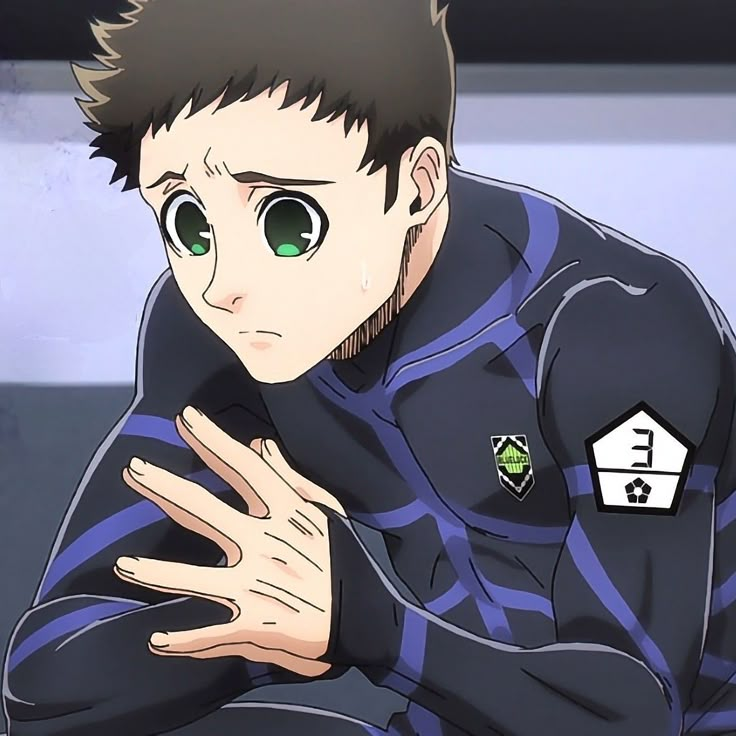

Yoichi Isagi
Protagonista, delantero visionario
Habilidad visión espacial y lectura de juego

Rin Itoshi
Delantero estrella, rival de Isagi
Habilidad técnica excepcional y ambición

Meguru Bachira
Delantero creativo, amigo de Isagi
Habilidad de regate y creatividad

Chigiri Hyoma
Delantero veloz, jugador clave
Velocidad explosiva y técnica de tiro
Reo Mikage
Delantero estratégico, compañero de Itoshi
Habilidad táctica y visión de juego

Ego Jinpachi
Coordinador del Blue Lock, mentor de los jugadores
Enfoque psicológico y táctico

Kaiser
Delantero alemán, rival internacional
Habilidad técnica y mentalidad competitiva

Barou Shouei
Delantero egocéntrico, jugador dominante
Fuerza física y habilidad de finalización

Gagamaru Gin
Portero talentoso, rival de Isagi
Habilidad de reflejos y posicionamiento
Kunigami Rensuke
Delantero fuerte, jugador de equipo
Fuerza física y espíritu de lucha

Sae Itoshi
Delantero japonés, hermano de Rin
Habilidad técnica y liderazgo

Nagi Seishiro
Delantero talentoso, rival de Isagi
Habilidad técnica y visión de juego

Shidou Ryusei
Delantero japonés, jugador polémico
Habilidad técnica y personalidad controvertida

Aiku Oliver
Delantero japonés, jugador estratégico
Habilidad táctica y visión de juego
Tokimitsu
Delantero japonés, jugador de equipo
Habilidad de pase y visión de juego
Naruhaya
Delantero japonés, jugador versátil
Habilidad de regate y adaptabilidad
Hiori
Delantero japonés, jugador técnico
Habilidad de regate y visión de juego
Zantetsu
Delantero japonés, jugador fuerte
Fuerza física y habilidad de finalización
Karasu
Delantero japonés, jugador estratégico
Habilidad táctica y visión de juego

Otoya
Delantero japonés, jugador rápido
Velocidad y habilidad de regate